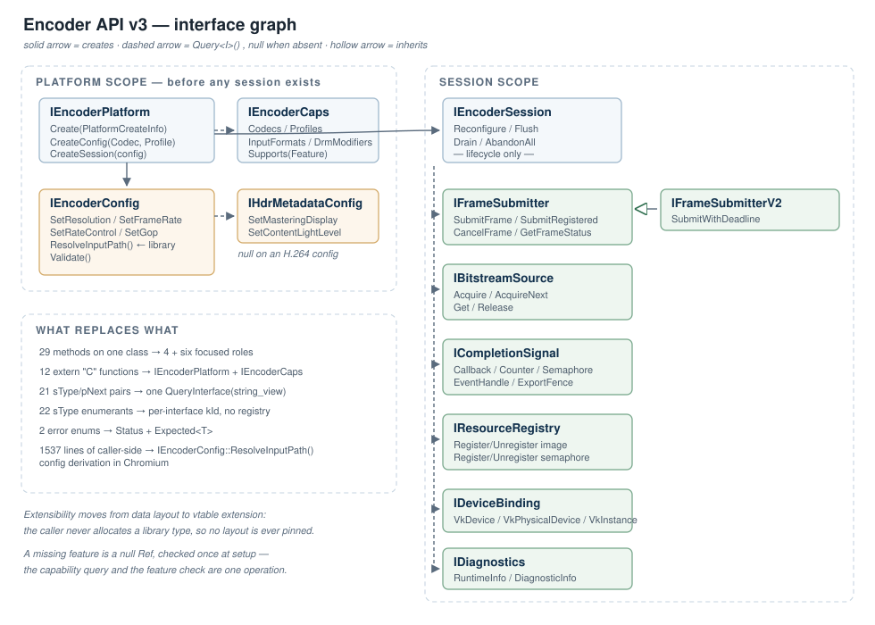

0. What we are designing against
Measured on the current branch:
vulkan_video_encoder_ext.h |
3250 lines |
vulkan_video_encoder_ext_internal.h |
1698 lines |
vulkan_video_encoder_ext.cpp |
12611 lines |
VulkanVideoEncoderExt virtual methods |
29 (+4 inherited) |
free extern "C" entry points |
12 |
structs carrying sType + pNext |
21 |
VkVideoEncoderStructureType enumerants |
22 |
| error currencies | 2 (VkResult ×13, VkVideoEncoderStatusCode ×8) |
| Chromium code whose only job is to fill one config struct | 429 lines (1537 of file, 1033 of it comment) |
That last row is the finding that drives everything below, and it is worth stating at its true size. media/gpu/vulkan/vulkan_video_encoder_config_builder.{h,cc} spans 1537 lines of file, but 1033 of those are comment: the code is 429 lines, and the part that is library policy rather than Chromium vocabulary is 113 of them -- EncodesOnlyViaPreprocessFilter(VkFormat), EncodesViaFilterPlaneStorage, EncodesViaFilterStorageRead, DeclaredSessionInputFormat, ClassifyFilterMatrix(int), DeriveMatrixFromPrimaries(int), ConvertsRgbToYcbcr(...), MapPixelFormat.
113 lines is not, by itself, an argument for redesigning an interface, and this document should not pretend otherwise. What those 113 lines demonstrate is a kind of cost rather than a quantity of one: none of that reasoning is Chromium's business, all of it duplicates a decision the library already makes internally, and it exists only because VkVideoEncoderConfig is an inert record. A struct cannot decide anything, so every caller re-derives what the library knows and every caller must get it right independently -- and the second caller pays the same 113 lines again, with its own bugs. The case for the redesign rests on that, and on the defects in section 4a that the descriptor shape made invisible, not on a line count.
An interface that can only be filled in pushes reasoning outward. An interface that can be asked keeps it in.
1. Principles
1.1 Kept from VA-API
VA-API's durability comes from four rules, and they are the right four:
- The caller never lays out a library type.
VAGenericIDis opaque; buffers are created by
vaCreateBuffer(..., size, ...) with the size passed explicitly. The library owns layout, so layout can change.
- Version is negotiated, not assumed.
vaInitialize(dpy, &major, &minor)tells the caller
what it actually got.
- Capability query precedes use.
vaQueryConfigProfiles→vaQueryConfigEntrypoints→
vaQueryConfigAttributes, before any context exists.
- One vocabulary, uniformly prefixed. Everything is
VA*/va*. There is never a question
of which namespace a symbol belongs to.
1.2 Rejected from VA-API
va_reserved[VA_PADDING_*]on 43 structs. Guessed-ahead, untyped space with a fixed
budget. When it runs out the struct is frozen forever; until it runs out every field added is a uint32_t reinterpreted by hand. Vtable extension has no budget and no casts.
- 48
VABufferTypeenumerants overvoid*. A hand-rolled dynamic type system. C++ has one
that the compiler checks.
- Implicit global state behind
VADisplay. Our device binding is explicit and always has
been; keep it that way.
- Errors as a bare int with a stringify function. No context, no propagation discipline.
1.3 The one structural move
Extensibility moves from data layout to vtable extension.
pNext extends a struct: the caller allocates it, so its layout is pinned the moment any caller compiles. Inheritance extends an interface: the library allocates, the caller only calls, so nothing about layout is observable and nothing needs pinning. That single move deletes, at once: 22 sType enumerants, 21 sType/pNext member pairs, every "values are permanent / never reuse" comment, every layout-pin test, and the class of bug where a struct is chained onto an entry point that refuses pNext.

2. Foundations
2.1 Namespace and naming
``cpp namespace vk::video::enc {} // everything below lives here ``
Interfaces are IName. Value types are Name. No Vk/VkVideoEncoder prefix soup: the namespace carries it. Vulkan handles keep their own spelling (VkDevice, VkFormat) because they are Vulkan's.
2.2 One error currency
Today a caller must know which of two enums a given method speaks. Replace both:
```cpp enum class ResultCode : int32_t { Ok = 0, // Caller error InvalidArgument, NotConfigured, AlreadyConfigured, UnsupportedFormat, UnsupportedProfile, UnsupportedFeature, OutOfRange, // Transient NotReady, Timeout, WouldBlock, OutOfResources, // Terminal DeviceLost, InternalError, };
class Result { public: Result() : code_(ResultCode::Ok), detail_("") {} Result(ResultCode c, const char* d = "") : code_(c), detail_(d ? d : "") {} bool ok() const { return code_ == ResultCode::Ok; } explicit operator bool() const { return ok(); } ResultCode code() const { return code_; } const char* detail() const { return detail_; } private: ResultCode code_; const char* detail_; }; ```
Result is 16 bytes and trivially copyable — a code plus a pointer to a string literal the library owns. That is deliberate on three counts: it puts no STL type in the ABI (§2.3), it allocates nothing on a path that runs once per frame, and it is returnable in registers.
The constraint that buys this is that detail() is a literal, not a formatted message. Detail needing runtime context — which frame id, which format — belongs on IDiagnostics, which exists for exactly that and is queried when a caller wants it.
Value-returning calls need a carrier for "a T, or a Status":
``cpp template <class T> class Expected; // holds T or Result; value(), status(), operator bool ``
This is roughly 60 header-only lines and it is permanent, not a stopgap. std::expected is C++23; this header targets C++11 (§2.6), so aliasing to the standard type is not on the table and the call sites do not need it to be.
2.3 Object model
VkSharedBaseObj<T> is already std::shared_ptr<T> and VkVideoRefCountBase is already just a virtual destructor. Keep both, spelled plainly:
``cpp class IObject { public: virtual ~IObject() = default; protected: IObject() = default; }; template <class T> using Ref = std::shared_ptr<T>; ``
No AddRef/Release to get wrong; no intrusive count to race.
ABI constraint, stated once.
shared_ptris not ABI-portable across toolchains. It is the only standard-library type in this surface:Resultis a code and aconst char*, enumerations are values, and array returns areArrayView(§3.1).std::shared_ptritself is C++11. Chromium static-links (Model D) and is unaffected. Consumers that loadlibvkvideo-encoder.somust be built with the same compiler and standard library. VA-API avoids this with opaque integer handles; we are trading that portability for type safety knowingly. If a third consumer ever needs true cross-toolchain ABI, the answer is a thin C shim over these interfaces — not a redesign of them.
2.4 Feature discovery — the replacement for pNext
One virtual, on the base, that never grows:
```cpp class IObject { public: virtual ~IObject() = default; virtual void* QueryInterface(std::string_view id) = 0; };
// Each interface names itself, version included: class IFrameSubmitter : public IObject { public: static constexpr std::string_view kId = "vk.video.enc.IFrameSubmitter/1"; ... };
template <class I> Ref<I> Query(const Ref<IObject>& obj) { if (!obj) return Ref<I>(); void* p = obj->QueryInterface(I::kId); return p ? Ref<I>(obj, static_cast<I*>(p)) : Ref<I>(); // aliasing ctor: shares obj's count } ```
Three properties worth naming:
Three properties worth naming:
- A missing feature is
nullptr, checked once, notUnsupportedFeaturereturned from a
method the caller had no way to know was unavailable.
- Identity is a string, so there is no central registry to keep in lockstep — no
VkVideoEncoderStructureType block with reservation comments, and a vendor can add "com.nvidia.enc.IFoo/1" without touching a shared enum.
- The version is in the name.
IFrameSubmitter/2is a different interface, not a struct
whose meaning depends on a size field.
2.5 How a version is added
``cpp class IFrameSubmitterV2 : public IFrameSubmitter { public: static constexpr std::string_view kId = "vk.video.enc.IFrameSubmitter/2"; virtual Status SubmitWithDeadline(const FrameSubmit&, Deadline) = 0; }; ``
An old caller keeps calling IFrameSubmitter and does not recompile. A new caller does if (auto v2 = Query<IFrameSubmitterV2>(session)). An old implementation (a test fake) simply does not answer the v2 id. No struct grew, no size was compared, no pNext was walked.
2.6 The language floor is C++17
The public header compiles at -std=c++17. The implementation stays C++20. Those are two different requirements and only the first one is a portability constraint: consumers include the header, they do not compile the 12611-line implementation. CMAKE_CXX_STANDARD 20 stays as it is.
C++17 is the floor because the library's own threading and synchronisation use C++17 facilities, and because the current public header is portable today — it compiles clean at -std=c++11 through -std=c++20, and a redesign that quietly raised the bar to C++20 would be a regression for consumers no one has surveyed.
Three C++20 conveniences are therefore out, and each has a cheap replacement:
| C++20 convenience | Replacement | Cost |
|---|---|---|
std::span<const T> |
ArrayView<T> — a borrowed {const T*, size_t} view |
~14 lines, header-only |
std::expected<T, E> |
Expected<T> (§2.2) |
~60 lines, and permanent — std::expected is C++23, not 20 |
designated initialisers {.device = d} |
plain member assignment on the aggregate | none |
``cpp // The only container type that crosses the interface. template <class T> class ArrayView { public: ArrayView() = default; ArrayView(const T* data, size_t size) : data_(data), size_(size) {} const T* data() const { return data_; } size_t size() const { return size_; } const T* begin() const { return data_; } const T* end() const { return data_ + size_; } const T& operator[](size_t i) const { return data_[i]; } private: const T* data_ = nullptr; size_t size_ = 0; }; ``
Everything else in the design is C++11 or C++14 and needs nothing. std::shared_ptr and its aliasing constructor are C++11; std::string_view and nested namespace a::b::c are C++17.
One trap worth recording, because it decides a spelling.
static constexpr std::string_view kIdis safe at C++17 and above only. Before C++17 aconstexprstatic data member that has a reference bound to it is an ODR-use requiring an out-of-line definition, and the link fails — verified: the same program produces an undefined reference at-std=c++11and links at-std=c++17, because C++17 made such members implicitly inline. Reading it by value is fine at every standard, so the bug only appears when some caller writesconst auto& id = I::kId;. If the floor ever has to drop below C++17, the id becomesstatic const char* Id(), which has no such edge — but at a C++17 floor the data member is the better spelling and is used here.
3. The interface set
Today's 29 methods and 12 free functions form one god object plus a loose bag. Split by role — each interface is what one collaborator needs, and nothing else.
3.1 Platform scope (before any session exists)
```cpp class IEncoderPlatform : public IObject { public: static constexpr std::string_view kId = "vk.video.enc.IEncoderPlatform/1";
virtual Ref<IEncoderCaps> Caps() const = 0; virtual Ref<IDeviceBinding> Device() const = 0;
virtual Expected<Ref<IEncoderConfig>> CreateConfig(Codec, Profile) = 0; virtual Expected<Ref<IEncoderSession>> CreateSession(const Ref<IEncoderConfig>&) = 0; };
// The ONE exported symbol. Adopt the caller's Vulkan objects; a null device // means the library creates its own. extern "C" VK_VIDEO_ENCODER_EXPORT VkResult VkEncCreatePlatform(const PlatformCreateInfo& info, Ref<IEncoderPlatform>& outPlatform); ```
IEncoderCaps absorbs the six enumeration free functions (VkEncGetEncodeCapabilities, VkEncEnumerateStdFlags, VkEncEnumerateInputFormats, VkEncEnumerateDrmModifiers, VkEncQueryInputFormatSupport, EnumerateVulkanVideoEncoderProfileCapabilities) into one queryable object:
``cpp class IEncoderCaps : public IObject { public: static constexpr std::string_view kId = "vk.video.enc.IEncoderCaps/1"; virtual ArrayView<Codec> Codecs() const = 0; virtual ArrayView<Profile> Profiles(Codec) const = 0; virtual ArrayView<InputFormat> InputFormats(Profile) const = 0; // carries optimality virtual ArrayView<uint64_t> DrmModifiers(Profile, VkFormat) const = 0; virtual const RateControlCaps& RateControl(Profile) const = 0; virtual const QpRange& QpRange(Profile) const = 0; virtual bool Supports(Feature) const = 0; }; ``
Returning an ArrayView (§2.6) over library-owned storage removes the two-call (nullptr, &count) → (buffer, &count) dance from every enumerator, and with it the class of bug where the two calls disagree.
3.2 Configuration — a builder, not a struct
This is where the 113 lines of caller-side derivation go home (§0).
```cpp class IEncoderConfig : public IObject { public: static constexpr std::string_view kId = "vk.video.enc.IEncoderConfig/1";
virtual IEncoderConfig& SetResolution(uint32_t width, uint32_t height) = 0; virtual IEncoderConfig& SetFrameRate(uint32_t num, uint32_t den) = 0; virtual IEncoderConfig& SetRateControl(const RateControl&) = 0; virtual IEncoderConfig& SetGop(const GopStructure&) = 0; virtual IEncoderConfig& SetInputFormat(VkFormat, ColorModel) = 0; virtual IEncoderConfig& SetInputColour(const ColourInfo&) = 0;
// What the library knows and the caller should not have to re-derive: virtual InputPath ResolveInputPath() const = 0; // Direct | Copy | ComputeFilter virtual VkFormat ResolveSessionFormat() const = 0; virtual Status Validate() const = 0; // one place, before a session exists }; ```
ResolveInputPath() is the whole point. Today the caller decides whether a compute filter is needed, from a struct field it sets itself, using classification logic it reimplemented. Here it asks. The rule the library actually wants to enforce — use the copy engine unless the layout, colour model, or format demands a filter — becomes one method with one implementation, and the caller can log the answer instead of guessing it.
Optional feature blocks stop being chained structs and become optional interfaces:
``cpp if (auto hdr = Query<IHdrMetadataConfig>(config)) { hdr->SetMasteringDisplay(...); hdr->SetContentLightLevel(...); } ``
Query returns null for an H.264 config, because H.264 has no mastering-display SEI. The rule that today is a runtime rejection at InitializeExt — after the caller has built the struct, chained it, and passed it — is expressed where the caller can act on it, at zero cost, in one if.
3.3 Session scope
IEncoderSession is deliberately small: lifecycle only. Everything else is a queried role.
``cpp class IEncoderSession : public IObject { public: static constexpr std::string_view kId = "vk.video.enc.IEncoderSession/1"; virtual Status Reconfigure(const Ref<IEncoderConfig>&) = 0; virtual Status Flush() = 0; virtual Status Drain() = 0; virtual Expected<uint32_t> AbandonAll() = 0; }; ``
| Role interface | Absorbs (today's methods) |
|---|---|
IFrameSubmitter |
SubmitExternalFrame, SubmitRegisteredFrame, CancelFrame, GetFrameStatus |
IBitstreamSource |
AcquireNextEncodedFrame, AcquireEncodedFrame, GetEncodedFrame, ReleaseEncodedFrame |
ICompletionSignal |
SetCompletionCallback, GetCompletionCounter, GetCompletionInfo, GetCompletionEventHandle, GetCompletionSemaphore, ExportCompletionSemaphoreHandle |
IResourceRegistry |
RegisterImageResource, UnregisterImageResource, RegisterSemaphore, UnregisterSemaphore, QueryImageSupport |
IDeviceBinding |
GetVkDevice, GetVkPhysicalDevice, GetVkInstance, GetVkGetInstanceProcAddr |
IDiagnostics |
GetRuntimeInfo, plus the diagnostic surface |
29 methods on one class become 4 + six focused interfaces averaging five methods. A reader asking "how do I get a bitstream out" reads one 4-method interface.
3.4 What this does to the test fake
media/gpu/vulkan/fake_vulkan_video_encoder_ext.h is 392 lines because a fake must implement all 29 pure virtuals whether the test touches them or not. Under this design a fake implements the roles the test exercises and answers nullptr for the rest — and the nullptr is meaningful, because it is exactly how a real implementation reports an absent feature. The fake stops being a wall of NOTREACHED().
3.5 Value types
Types the caller constructs (RateControl, GopStructure, ColourInfo, PlaneLayout, Rect) stay plain aggregates — no sType, no pNext, no reserved padding. The rule that keeps this safe is one line:
A type the caller constructs may never be extended. A type the library owns may.
Extension always happens on an interface. A value type that turns out to need a new field gets a new setter taking a new value type on a /2 interface; the old one keeps its meaning forever.
4. A caller, end to end
The Chromium VulkanVideoEncodeAccelerator::Initialize path, as it would read:
```cpp PlatformCreateInfo pci; // plain aggregate the caller owns pci.instance = vk_instance; pci.device = vk_device; Ref<IEncoderPlatform> platform; if (VkResult r = VkEncCreatePlatform(pci, platform); r != VK_SUCCESS) return Fail(r);
auto caps = platform->Caps(); if (!caps->Supports(Feature::kDmaBufImport)) return Fail("no dma-buf import");
auto config = platform->CreateConfig(Codec::kH265, Profile::kMain); if (!config) return Fail(config.status()); RateControl rc; // aggregate; no designated initialisers (§2.6) rc.mode = RateControlMode::kCq; rc.quality = 26; (*config)->SetResolution(w, h) .SetFrameRate(num, den) .SetRateControl(rc) .SetInputFormat(vk_format, ColorModel::kBt709Limited);
if (auto hdr = Query<IHdrMetadataConfig>(*config)) hdr->SetContentLightLevel(max_cll, max_fall);
if (Status s = (*config)->Validate(); !s) return Fail(s); input_path_ = (*config)->ResolveInputPath(); // logged, not re-derived
auto session = platform->CreateSession(*config); if (!session) return Fail(session.status());
submitter_ = Query<IFrameSubmitter>(*session); bitstream_ = Query<IBitstreamSource>(*session); completion_ = Query<ICompletionSignal>(*session); // may be null; poll instead registry_ = Query<IResourceRegistry>(*session); // may be null; submit unregistered ```
Everything the caller must know is a compile-checked type or a null check. Nothing is a sType constant, a pNext cast, or a field the caller had to derive.
4a. What implementing it changed
The header and a translating implementation are on vk_video_encoder/include/vulkan_video_encoder_v3.h and .../src/vulkan_video_encoder_v3.cpp, with test/encoder-v3-interface driving them. Three constraints surfaced only from compiling against the real tree, and each changed the design.
4a.1 Xlib owns Success, None and Status
The library builds with VK_USE_PLATFORM_XLIB_KHR, as does every browser and compositor on Linux, and Xlib defines Success, None, Status, Bool, Always, Complex, Convex, Above, Below, KeyPress and CursorShape as object-like macros. A namespace is no defence against the preprocessor, and #undef-ing them in a public header would silently break the consumer's own use of Xlib.
So the status type is Result and its code type is ResultCode, and the "no handle" enumerator is NoHandle. This is not a style preference: with the original spelling the header does not parse in any translation unit that has seen Xlib, which is the entire target audience.
4a.2 The library builds -fno-rtti, so dynamic_cast is unavailable
A session has to verify that a configuration handed back to it is one this library made. dynamic_cast is the reflex, and it does not compile here — nor would it in Chromium, which also builds without RTTI.
QueryInterface already is a typed downcast that needs no RTTI, so it serves for this too, through an IConfigAccess id kept out of the public header. The mechanism that replaces pNext turns out to replace RTTI as well, and there is one mechanism to understand rather than two. This is a point in the design's favour that was not visible from the design alone.
4a.3 RegisterSemaphore imports a handle; it does not adopt a VkSemaphore
The sketch had RegisterSemaphore(VkSemaphore). The implementation imports an OS handle into a new timeline semaphore — a binary semaphore cannot report a completion to a consumer that was not already waiting. The interface takes an ExternalSemaphore accordingly. A design reviewed only on paper would have shipped the wrong signature.
4a.4 Flush() is terminal, and the name hid it
The sketch had Flush() and Drain() as a checkpoint and a stronger checkpoint. They are not. In the implementation, Flush() releases the encoder: it writes the trailing bitstream a reordered GOP still owes, drops the encoder object, and every later submission is refused with ERROR_NOT_INITIALIZED. DrainPendingFrames() is the non-terminal one — the session stays fully usable and may be drained repeatedly.
This was found by running frames through, not by reading. The first working version of the test encoded eight frames, called what it thought was a checkpoint, and then could not submit a ninth; the failure surfaced as encoder status 16 and nothing else, which is precisely why the IDiagnostics channel exists.
The interface therefore names the two operations for what they do:
| v3 | Underlying | Meaning |
|---|---|---|
Drain() |
DrainPendingFrames() |
Encode everything submitted and wait. The session stays usable. Callable repeatedly. |
Finish() |
Flush() |
End the stream. Terminal; later submissions refused. Encoded frames stay acquirable. |
Flush is not carried forward as a name. It reads like a checkpoint in every other API a caller has used, and here it ends the session — a caller who reaches for it by habit loses a stream and gets one error code to explain it.
4a.5 ExternalImage needs the usage the image was created with
A VkImage handle does not carry its own VkImageUsageFlags or VkImageCreateFlags, and the library needs both to decide whether the encoder can read the image directly or must stage it. The first version of the value type omitted them, and registration then succeeded while submission failed. usage, createFlags and residency are now fields, which is exactly the kind of thing §3.5's rule is about: a caller-constructed type has to be right the first time, because it can never grow one.
4a.6 Driving the completion roles found a deadlock
ICompletionSignal and Reconfigure were implemented and, for a while, only checked for being present — Query returned non-null, so the role "worked". Driving them found two defects that presence checks cannot reach, and both were in this design's own implementation rather than in the layer below.
SetCallback deadlocked against its own quiesce point. Installing or clearing a completion callback returns only once any in-flight invocation has returned. The implementation held its callback mutex across that call — and the in-flight invocation was a trampoline waiting on the same mutex. The fix is ordering, not locking: release before the library call, clear the cookie only after the library has quiesced (which is what makes "you may now destroy what it pointed at" true), and route a replacement through a detach, because the library sees the same trampoline pointer either way and would not quiesce on its own.
Reconfigure replaced rather than overlaid. A caller wanting to change the bitrate had to restate the resolution, format and frame rate it was not touching, or be refused for changing them. The session now keeps the configuration it was created with and overlays only what the new one states, with an unset field meaning "leave it alone". That is the same principle as ResolveInputPath: the library holds the rule, and the caller is not made to know it.
One thing the tests deliberately do not assert: one callback per frame. Notifications coalesce — the header says so — so the check is that the callback fires and never more often than frames complete, and that retrieval reconciles against the counter the way consumers are told to. A test asserting one-to-one would pass today and encode a promise the library does not make.
The timeline semaphore is checked for what it means (lastFrameId + 1 once the encodes retire, observed at 4006 for a last id of 4005) and for being withdrawn when the stream ends. Detachment is shown to stop notifications by encoding further frames and requiring the count not to move; an earlier version compared the counter with itself and would have passed on a detach that did nothing.
4a.7 What porting a real host found that review could not
The design was reviewed, prototyped, compiled, and exercised by an 83-check suite on hardware before Chromium's encode accelerator was moved onto it. That port then found ten things the interface could not express or expressed wrongly. Every one is a place where the design modelled what a caller receives when things work and lost what only matters when they do not.
| # | What was missing | What it would have cost |
|---|---|---|
| 1 | Acquire/release fences on FrameSubmit |
zero-copy reads a half-rendered frame; caller never learns when it may write the buffer again |
| 2 | Per-frame outcome on EncodedFrame |
a VK_TIMEOUT deadline drop emitted as an empty bitstream and called output |
| 3 | RuntimeInfo::supportsNativeHandle and three siblings |
the host allocates the wrong kind of buffer |
| 4 | A release callback on SetCallback |
a heap-allocated cookie with no correct owner |
| 5 | The ownership echo on registration | nothing for the host to assert against |
| 6 | An invented int32 index instead of the library's handle |
a second registry that existed only to translate |
| 7 | IDeviceBinding on a session, not only a platform |
the CPU dma-buf tier silently disabled; every frame demoted to staging |
| 8 | Device provenance on ExternalImage |
the library's cross-device check disabled, not merely weakened |
| 9 | The echo returned inside Expected |
lost on exactly the refusal path where it is the only way to know |
| 10 | QueryImageSupport reading the status and not the reply |
every refusal read as an acceptance |
Number 7 is the one to dwell on, because it is the failure mode this project exists to prevent: nothing crashed, no test asserted anything false, and the encoder produced correct output — by the slowest path available. It was caught only because a test counts which tier ran.
Number 8 is the one to be least comfortable about. An earlier pass of this document recorded that ExternalImage covered every field the accelerator sets, having checked for assignments to each. The provenance fields are filled by a span copy, so the check missed them and cleared a gap that was real.
Three further defects were in the porting, not the design, and they share one shape: a rich answer converted to a boolean. The stall watchdog asked for the completion counters and kept only whether the call succeeded, so it could no longer name which side had stalled. Registration refusals were flattened to a single failure code at eight sites, collapsing NOT_READY — park and re-submit — into a fatal refusal that memoizes a descriptor as unusable. And the completion echo was read into a variable the refusal path then discarded.
The lesson the whole exercise supports is narrow and worth stating without inflation: an interface is not finished when it compiles, nor when its own tests pass. It is finished when something that did not write it has to answer real questions through it.
4a.8 Two conveniences that survived contact
ResolveInputPath() is implemented against VkEncClassifyInput, which lives in the internal header. Because the translation unit sits in src/, it can reach it — so the rule the caller currently re-derives is answered by the library, with the real classifier, at no layering cost.
Query<IHdrMetadataConfig> returns null on an H.264 configuration and non-null on H.265, checked on hardware. The refusal that today happens inside session creation is now a null check the caller writes once.
4b. How this sits with the browser's own interfaces
Worth settling explicitly, because it decides whether v3 is an invention or a convergence.
4b.1 The config builder is ours, not Chromium's
media/gpu/vulkan/vulkan_video_encoder_config_builder.{h,cc} has exactly one commit in its history — 61ebb410d232 "media: the Vulkan Video encode accelerator" — and upstream Chromium has no media/gpu/vulkan/ directory at all. It is not pre-existing browser code we must live with: it is an adapter this integration had to grow, and it exists because the library speaks in descriptor structs. The descriptor API did not merely fail to help; it created the adapter.
How much work that is, stated honestly: 429 lines of code, of which 113 are the library-policy derivation of §0. Not 1537 — that is the file count and two thirds of it is comment.
4b.2 Chromium's own encoder interface already looks like v3
media::VideoEncodeAccelerator — the interface our accelerator implements — is built from exactly the pieces proposed here:
| Chromium, today | v3 |
|---|---|
| Pure-virtual abstract class, library-allocated, caller never lays it out | IEncoderSession and the role interfaces |
Nested pure-virtual VideoEncodeAccelerator::Client for completion |
ICompletionSignal |
EncoderStatus = TypedStatus<EncoderStatusTraits> — one error currency, code plus payload |
Status (§2.2) |
Config: a plain struct with real constructors |
PlatformCreateInfo and the value types (§3.5) |
Zero occurrences of pNext in the header |
zero |
So v3 is not a new idiom; it is the idiom on the other side of the seam. Today the accelerator is a translator between two philosophies, and the translation is where the config builder lives.
Two differences are real and worth naming rather than papering over:
- Ref-counting spelling. Chromium uses
scoped_refptr<T>overbase::RefCountedThreadSafe;
we use std::shared_ptr (§2.3). Both are intrusive-vs-external variants of the same idea, and the accelerator holds both kinds already. This is a boundary, not a conflict.
- Completion style. Chromium wants one style — a
Clientcallback.ICompletionSignal
offers six entry points (callback, counter, semaphore, event handle, fence export) because TRV and the AQ library want the others. Making it a role is what keeps that generality out of the browser's way: the browser queries the interface, uses the callback, and never sees the rest.
4b.3 How the rest of the browser communicates
Two layers, and neither resembles a descriptor chain:
- In-process (within the GPU process, where we live): pure-virtual C++ abstract classes,
scoped_refptr for shared ownership, base::OnceCallback/RepeatingCallback for completion. VideoEncodeAccelerator, VideoDecoder, ImageBacking are all this shape.
- Cross-process: Mojo. Interfaces are declared in IDL (
media/mojo/mojom/video_encode_accelerator.mojom
defines VideoEncodeAcceleratorProvider, VideoEncodeAcceleratorConfig and friends), the bindings are generated, and structs cross the boundary through typemap traits. Extension is the IDL's job — a new field is added to the .mojom and the generated code handles both ends.
The relevant conclusion for us: Chromium never asks a caller to lay out a struct that crosses a version boundary. In-process it uses vtables; cross-process it uses generated serialisation. The sType/pNext pattern has no analogue anywhere in the media stack, which is why the adapter had to be written by hand.
We are static-linked (Model D), so layer 1 is the one we join. v3 joins it directly.
4c. The existing clients, and the process boundary
4c.1 Who actually consumes this
| Consumer | Linkage | Surface it uses |
|---|---|---|
| Chromium | static, vendored (Model D) | the ext API in full: config, submit, acquire, register, capabilities |
TRV (vk-encoder-instance) |
dynamic libvkvideo-encoder.so.1, optional — Windows DELAYLOAD, and a display-only mode when absent |
seven calls: CreateVulkanVideoEncoderExt, InitializeExt, SubmitExternalFrame, ReleaseEncodedFrame, Flush, GetVkDevice, GetVkPhysicalDevice |
Samples demos (vk-video-enc-test) |
in-tree | the original four-method interface, driven by CreateVulkanVideoEncoder(codec, argc, argv) |
AQ (nvenc_aq_vulkan) |
not a client — add_subdirectoryd into the library |
none; it is a provider linked in below the interface |
Three things follow.
TRV's real surface is seven calls, and it is fire-and-forget. It submits frames and releases them; it never retrieves a bitstream, because the library writes the output. Migrating it means VkEncCreatePlatform + CreateConfig/CreateSession, then Query<IFrameSubmitter>, Query<IBitstreamSource> for the release, and Query<IDeviceBinding> for the two getters. That is a day, not a project — and it is worth knowing before anyone budgets the migration off the 29-method count.
The shared_ptr ABI constraint of §2.3 is real for TRV, not hypothetical. TRV compiles with VK_VIDEO_ENCODER_SHAREDLIB=1 and resolves libvkvideo-encoder.so.1 at load time. TRV and the library must be built with the same toolchain and standard library. They already are; this is a constraint to record, not a defect to fix.
TRV treats the encoder as an optional, delay-loadable dependency, and that dictates the factory. A DELAYLOADed or dlsym'd entry point must have a stable, unmangled name, so IEncoderPlatform::Create as a static member is the wrong shape — a mangled symbol is not something a delay-load stub or a dlsym call can name portably. The design therefore keeps exactly one exported C symbol, VkEncCreatePlatform, mirroring today's CreateVulkanVideoEncoderExt; everything else is reached through virtuals on the object it returns. One symbol to resolve, one symbol whose absence means "run without the encoder."
4c.2 Is the interface serialisable across processes?
Not by itself — and no consumer needs it to be.
Both consumers draw the process boundary above the library, not through it:
- TRV runs the encoder in a separate process,
vk-encoder-instance, and talks to it over
AF_UNIX/SOCK_STREAM with sendmsg/recvmsg and SCM_RIGHTS to pass dma-buf file descriptors. The protocol is TRV's own; the library sits entirely inside the encoder process.
- Chromium puts the boundary between the renderer and the GPU process, in Mojo. The library
is inside the GPU process.
- The library itself contains no IPC. The only mention of
SCM_RIGHTSin the public header is a
comment describing how a host passes a handle in.
That is not a coincidence, and it is the answer to the question. The library's objects are a VkDevice, a VkImage, a video session — things that have no meaning outside the process that owns them. What crosses a boundary is never the object, it is the OS handle exported from it: a dma-buf fd, an external semaphore handle, a shared-memory region. The API already treats those as an explicit, separate concern (VkVideoEncoderExternalHandleType, ExportCompletionSemaphoreHandle, the DRM modifier query), and v3 keeps that discipline unchanged. So the encoder always runs where the device is, and the boundary goes above it.
What the descriptor style would have given up. One honest point in its favour: a tagged struct chain is self-describing. A generic marshaller can walk a pNext chain reading sType and copying payloads without knowing any of the types. A vtable offers nothing comparable — it is a pointer to code in one address space. That is a real property being traded away.
It is a smaller loss than it appears, for two reasons. A pNext chain still contains pointers, so a marshaller needs a per-type size and a per-type pointer walk anyway — the tag saves the dispatch, not the work. And the payloads that matter are handles, which are never serialisable by any style.
If a proxy is ever wanted, the role split makes it easier, not harder. Each role is a small, single-purpose interface — IFrameSubmitter is four methods — which is exactly the shape of a Mojo interface or a generated stub. Proxying six focused interfaces is mechanical; proxying one 29-method object with a pNext-extensible config is not. The discipline that keeps it mechanical is already a rule of this design (§3.5): every method parameter is either a plain serialisable value type or an explicitly exportable OS handle. Nothing in the design takes a pointer to a caller-owned structure whose layout the wire would have to know.
Decision: v3 is an in-process interface. No Mojo, no proxy, no wire format, and no serialisation requirement on any method signature. Both consumers already arrange the boundary above the library and neither asks for anything else, so building a transport into the design would be speculative work carried by every caller.
What keeps that decision cheap to revisit is the discipline in §3.5, which the design follows for its own reasons: every method parameter is a plain value type or an explicitly exportable OS handle, and no method takes a pointer to a caller-owned structure whose layout a wire would need to know. If a third consumer ever needs a proxy, the role interfaces are already the right granularity to generate one from. Nothing is being designed for that case; it is simply not being designed out.
4c.3 Chromium's out-of-process encoding mode
Chromium is moving hardware encode out of the GPU process into a dedicated utility process. It matters here because it decides which process our library runs in, and because one of its gates excludes us.
The shape, as it stands upstream:
- Feature:
kUseOutOfProcessVideoEncoding, Linux and ChromeOS only,
FEATURE_DISABLED_BY_DEFAULT. Its comment: "Spawn utility processes to perform hardware encode acceleration instead of using the GPU process."
- Launch: the browser process calls
ServiceProcessHost::Launch(...)with display name
"Video Encoder" (content/browser/media/video_encode_accelerator_provider_launcher.cc).
- Interface chain: browser →
VideoEncodeAcceleratorProviderFactory→ (renderer)
VideoEncodeAcceleratorProvider → CreateVideoEncodeAccelerator(EncodeCommandBufferId?, pending_receiver<VideoEncodeAccelerator>). All Mojo, all generated.
- Sandbox:
ServiceSandbox=sandbox.mojom.Sandbox.kHardwareVideoEncoding, which on Linux
returns GetGpuProcessSandbox(...) under an explicit "TODO(b/255554267): we're using the GPU process sandbox policy for now as a transition step… we should create a policy that's tighter just for hardware video encoding." So today it is exactly as permissive as the GPU process, and that is stated to be temporary.
What it does not change for this design. The Mojo boundary sits above media::VideoEncodeAccelerator, which sits above our library. The library still runs in whichever process owns the VkDevice; out-of-process encoding only changes which process that is. v3 needs nothing added for it — the same conclusion as §4c.2, reached from the browser's side.
Position: the integration targets the GPU process, where the feature is off by default and where the zero-copy seam works. Out-of-process encoding is not in scope for v3. The two items below are recorded so that enabling it later is a decision with known consequences rather than a surprise; neither is work for this design.
Two things it does change, and both are risks worth naming.
Zero-copy depends on SharedImage access that a utility process does not have by default. Our zero-copy tier is built on OzoneImageBacking::ProduceVulkanVideo. In the OOP model a caller may only supply shared-image-backed frames when EncodeCommandBufferId carries a valid channel_token and route_id and the profile advertises supports_gpu_shared_images; otherwise the accelerator accepts CPU-memory or GpuMemoryBuffer frames only. The sibling feature for decoding, kUseSharedImageInOOPVDProcess, is disabled with "TODO(crbug.com/457296322): Enable after fixing issue where SharedImages are missing from the SharedImageManager." Running our encoder out of process without setting supports_gpu_shared_images would therefore demote it from zero-copy to cpu-dmabuf or staging — silently, and functionally green. That is precisely the degradation the Tier-3 harness exists to catch, and it is the reason that harness reports a tier rather than a pass.
The service is gated on a flag that Vulkan encode does not set. Every piece above — RunVideoEncodeAcceleratorProviderFactory in content/utility/services.cc, the kHardwareVideoEncoding sandbox case — is behind BUILDFLAG(USE_LINUX_VIDEO_ACCELERATION), and media/gpu/args.gni defines:
``gn use_linux_video_acceleration = use_vaapi || use_v4l2_codec ``
enable_vulkan_video_encode does not participate. A Vulkan-only build does not compile the out-of-process encoding service at all. If that mode ever becomes the default, such a configuration has no service to launch — the same gap that already keeps the in-tree VEA test targets unreachable without VA-API or V4L2. Making use_linux_video_acceleration include enable_vulkan_video_encode is a one-line change, and it should be made deliberately rather than discovered.
5. Migration
Neither Chromium nor ThreadedRenderingVk_Standalone nor the AQ library can switch atomically, so the two surfaces coexist for exactly one release.
| Step | Work |
|---|---|
| 1 | Land vk_video_encoder/include/vulkan_video_encoder_v3.h — interfaces only, no implementation. Compiles standalone; reviewable on its own. |
| 2 | Implement v3 as a shim over the existing implementation. No behaviour change, no risk to the RC-6 test results. |
| 3 | Port the C++ ctest suites to v3. They are the proof that the shim is faithful. |
| 4 | Port Chromium: vulkan_video_encode_accelerator.cc first, then delete the resolvable parts of vulkan_video_encoder_config_builder.cc as IEncoderConfig absorbs them. The absorbable derivation is 113 code lines (§0); the gain is that it stops being duplicated per caller, not the count. |
| 5 | Port TRV — seven call sites (§4c.1). The AQ library is not a client and needs no port. |
| 6 | Invert: v3 becomes the implementation, VulkanVideoEncoderExt becomes the shim. |
| 7 | Delete the shim, the 22 sType enumerants, the 21 sType/pNext pairs, the layout-pin tests, and the second error enum. |
Steps 1–3 are self-contained and testable without touching a caller. Step 4 is where the payoff is measurable, and it is measurable in deleted lines.
6. Costs, honestly
- One extra indirection per feature acquisition. Paid once per session at
Query, never per
frame. The per-frame path (SubmitFrame, AcquireEncodedFrame) is one virtual call, exactly as it is today.
- Virtual calls on config setters. Configuration path, not hot; measured in nanoseconds
against a session creation measured in milliseconds.
shared_ptr/std::stringin the ABI constrains shared-library consumers to a matching
toolchain (§2.3). Static-linked Chromium is unaffected.
- A shim release. Two surfaces to keep working for one cycle, which is the price of not
breaking three consumers at once.
- String interface ids cost a comparison at
Query. Once per session. The alternative — a
central enum — is the thing we are removing.
- Self-describing marshalling is given up (§4c.2): a
pNextchain can be walked generically
by tag, and a vtable cannot. No current consumer marshals the interface — both put the process boundary above the library — but it is a real property, traded knowingly.
7. What is explicitly not changing
- The library keeps
std::shared_ptrsemantics it already has; this is not a refcount rewrite. - Vulkan handles stay Vulkan handles. No wrapping
VkDevice. - The encode pipeline, the DPB logic, the compute filter, the parameter caches: untouched. This
is a surface redesign, and the 12611-line implementation is reached through a shim until every caller has moved.
8. The mechanism is compiled, not asserted
vulkan_video_encoder_v3_prototype.cpp in this directory is a self-contained, runnable reduction of every mechanism above:
``sh g++ -std=c++17 -Wall -Wextra -Werror -O2 vulkan_video_encoder_v3_prototype.cpp -o v3proto clang++ -std=c++17 -Wall -Wextra -Werror -O2 vulkan_video_encoder_v3_prototype.cpp -o v3proto ``
Clean at -Wall -Wextra -Werror in all four combinations — GCC 14 and Chromium's bundled clang, at -std=c++17 and -std=c++20. It asserts seven properties:
| # | Property proven |
|---|---|
| 1 | Query<IFrameSubmitter> resolves a role off a session held as Ref<IEncoderSession>. |
| 2 | IFrameSubmitterV2 is discovered on the same object by its own id — versioning by inheritance works without a size field or a pNext walk. |
| 3 | An unimplemented role (ICompletionSignal) yields nullptr, cleanly — the capability query and the feature check are the same operation. |
| 4 | The aliasing shared_ptr constructor keeps the owner alive: the session ref is reset() and the bitstream role still reads correctly. A caller cannot outlive-dangle a role. |
| 5 | The H.264-has-no-HDR rule holds in the type system: Query<IHdrMetadataConfig> is non-null on an H.265 config and null on an H.264 one, with no session created and no call refused. |
| 6 | Chained setters return IEncoderConfig&, Validate() reports InvalidArgument with detail, and ResolveInputPath() answers from the library. |
| 7 | Status is 16 bytes and std::is_trivially_copyable — no allocation and no STL type on the per-frame return path. |
Property 4 is what makes handing a caller six separate role pointers safe. Property 5 is the one that pays: a runtime rejection deep in InitializeExt becomes a null check written once.
8.1 Keep the floor honest
The floor is a claim that decays silently the first time someone writes std::span in the header. It is also trivially checkable — the probe is one translation unit:
``sh echo '#include "vulkan_video_encoder_v3.h" int main(){return 0;}' > /tmp/probe.cpp g++ -std=c++17 -fsyntax-only -I vk_video_encoder/include /tmp/probe.cpp ``
Add it to the ctest suite alongside the existing header checks, so a C++20 construct in the public header fails a build rather than a downstream consumer.